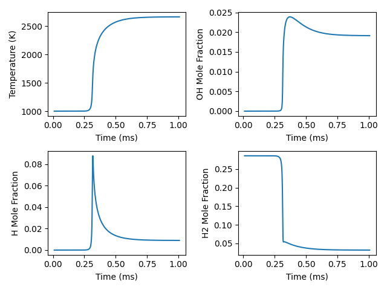

Note
Go to the end to download the full example code.
Constant-pressure, adiabatic kinetics simulation#
Requires: cantera >= 2.5.0, matplotlib >= 2.0
Initializing reactor network.
Reactor 0: 12 variables.
0 sensitivity params.
Number of equations: 12
Maximum time step: 0
t [s] T [K] P [Pa] u [J/kg]
1.000e-05 1001.000 101325.000 620761.940774
2.000e-05 1001.000 101325.000 620761.940024
3.000e-05 1001.000 101325.000 620761.937443
4.000e-05 1001.000 101325.000 620761.932033
5.000e-05 1001.000 101325.000 620761.922251
6.000e-05 1001.000 101325.000 620761.905712
7.000e-05 1001.000 101325.000 620761.878725
8.000e-05 1001.000 101325.000 620761.835580
9.000e-05 1001.001 101325.000 620761.767437
1.000e-04 1001.001 101325.000 620761.660607
1.100e-04 1001.001 101325.000 620761.493864
1.200e-04 1001.002 101325.000 620761.234248
1.300e-04 1001.003 101325.000 620760.830463
1.400e-04 1001.005 101325.000 620760.202386
1.500e-04 1001.008 101325.000 620759.224189
1.600e-04 1001.012 101325.000 620757.696642
1.700e-04 1001.019 101325.000 620755.300403
1.800e-04 1001.030 101325.000 620751.514343
1.900e-04 1001.048 101325.000 620745.465936
2.000e-04 1001.076 101325.000 620735.641598
2.100e-04 1001.124 101325.000 620719.289981
2.200e-04 1001.204 101325.000 620691.109787
2.300e-04 1001.349 101325.000 620640.173038
2.400e-04 1001.623 101325.000 620542.299510
2.500e-04 1002.182 101325.000 620340.602686
2.600e-04 1003.397 101325.000 619897.667914
2.700e-04 1006.134 101325.000 618893.694074
2.800e-04 1012.324 101325.000 616618.206745
2.900e-04 1026.776 101325.000 611309.993847
Limiting global state vector component 1 (dt = 1e-05): 37.7083 > 20
2.950e-04 1040.882 101325.000 606137.126425
Limiting global state vector component 1 (dt = 1e-05): 67.2381 > 20
Limiting global state vector component 1 (dt = 5e-06): 23.877 > 20
2.975e-04 1051.164 101325.000 602371.487295
Limiting global state vector component 1 (dt = 1e-05): 93.9239 > 20
Limiting global state vector component 1 (dt = 5e-06): 32.0614 > 20
3.000e-04 1064.775 101325.000 597393.368098
Limiting global state vector component 1 (dt = 1e-05): 136.838 > 20
Limiting global state vector component 1 (dt = 5e-06): 44.3812 > 20
3.025e-04 1083.260 101325.000 590644.956050
Limiting global state vector component 1 (dt = 1e-05): 213.467 > 20
Limiting global state vector component 1 (dt = 5e-06): 64.1415 > 20
Limiting global state vector component 1 (dt = 2.5e-06): 25.9868 > 20
3.038e-04 1095.086 101325.000 586334.638376
Limiting global state vector component 1 (dt = 1e-05): 273.723 > 20
Limiting global state vector component 1 (dt = 5e-06): 78.6969 > 20
Limiting global state vector component 1 (dt = 2.5e-06): 31.3397 > 20
3.050e-04 1109.250 101325.000 581179.574384
Limiting global state vector component 1 (dt = 1e-05): 358.513 > 20
Limiting global state vector component 1 (dt = 5e-06): 98.1849 > 20
Limiting global state vector component 1 (dt = 2.5e-06): 38.326 > 20
3.063e-04 1126.431 101325.000 574936.977616
Limiting global state vector component 1 (dt = 1e-05): 483.21 > 20
Limiting global state vector component 1 (dt = 5e-06): 124.958 > 20
Limiting global state vector component 1 (dt = 2.5e-06): 47.6408 > 20
Limiting global state vector component 1 (dt = 1.25e-06): 21.1544 > 20
3.069e-04 1136.438 101325.000 571306.548423
Limiting global state vector component 1 (dt = 1e-05): 562.701 > 20
Limiting global state vector component 1 (dt = 5e-06): 141.946 > 20
Limiting global state vector component 1 (dt = 2.5e-06): 53.4718 > 20
Limiting global state vector component 1 (dt = 1.25e-06): 23.6213 > 20
3.075e-04 1147.586 101325.000 567266.817260
Limiting global state vector component 1 (dt = 1e-05): 655.327 > 20
Limiting global state vector component 1 (dt = 5e-06): 161.942 > 20
Limiting global state vector component 1 (dt = 2.5e-06): 60.2979 > 20
Limiting global state vector component 1 (dt = 1.25e-06): 26.4955 > 20
3.081e-04 1160.060 101325.000 562752.407327
Limiting global state vector component 1 (dt = 1e-05): 759.782 > 20
Limiting global state vector component 1 (dt = 5e-06): 185.376 > 20
Limiting global state vector component 1 (dt = 2.5e-06): 68.3113 > 20
Limiting global state vector component 1 (dt = 1.25e-06): 29.859 > 20
3.088e-04 1174.082 101325.000 557685.008242
Limiting global state vector component 1 (dt = 1e-05): 868.88 > 20
Limiting global state vector component 1 (dt = 5e-06): 212.463 > 20
Limiting global state vector component 1 (dt = 2.5e-06): 77.7188 > 20
Limiting global state vector component 1 (dt = 1.25e-06): 33.8072 > 20
3.094e-04 1189.919 101325.000 551971.071479
Limiting global state vector component 1 (dt = 1e-05): 954.922 > 20
Limiting global state vector component 1 (dt = 5e-06): 242.574 > 20
Limiting global state vector component 1 (dt = 2.5e-06): 88.7022 > 20
Limiting global state vector component 1 (dt = 1.25e-06): 38.4451 > 20
3.100e-04 1207.888 101325.000 545499.819076
Limiting global state vector component 1 (dt = 1e-05): 976.663 > 20
Limiting global state vector component 1 (dt = 5e-06): 274.153 > 20
Limiting global state vector component 1 (dt = 2.5e-06): 101.37 > 20
Limiting global state vector component 1 (dt = 1.25e-06): 43.8759 > 20
Limiting global state vector component 1 (dt = 6.25e-07): 20.4741 > 20
3.103e-04 1217.787 101325.000 541940.650601
Limiting global state vector component 1 (dt = 1e-05): 948.431 > 20
Limiting global state vector component 1 (dt = 5e-06): 289.663 > 20
Limiting global state vector component 1 (dt = 2.5e-06): 108.324 > 20
Limiting global state vector component 1 (dt = 1.25e-06): 46.914 > 20
Limiting global state vector component 1 (dt = 6.25e-07): 21.8816 > 20
3.106e-04 1228.362 101325.000 538142.580922
Limiting global state vector component 1 (dt = 1e-05): 874.013 > 20
Limiting global state vector component 1 (dt = 5e-06): 303.928 > 20
Limiting global state vector component 1 (dt = 2.5e-06): 115.632 > 20
Limiting global state vector component 1 (dt = 1.25e-06): 50.1722 > 20
Limiting global state vector component 1 (dt = 6.25e-07): 23.3988 > 20
3.109e-04 1239.668 101325.000 534087.175072
Limiting global state vector component 1 (dt = 1e-05): 675.806 > 20
Limiting global state vector component 1 (dt = 5e-06): 313.791 > 20
Limiting global state vector component 1 (dt = 2.5e-06): 123.127 > 20
Limiting global state vector component 1 (dt = 1.25e-06): 53.6414 > 20
Limiting global state vector component 1 (dt = 6.25e-07): 25.0275 > 20
3.113e-04 1251.761 101325.000 529755.591821
Limiting global state vector component 1 (dt = 1e-05): 432.646 > 20
Limiting global state vector component 1 (dt = 5e-06): 321.216 > 20
Limiting global state vector component 1 (dt = 2.5e-06): 130.794 > 20
Limiting global state vector component 1 (dt = 1.25e-06): 57.309 > 20
Limiting global state vector component 1 (dt = 6.25e-07): 26.7657 > 20
3.116e-04 1264.696 101325.000 525129.174275
Limiting global state vector component 1 (dt = 1e-05): 78.017 > 20
Limiting global state vector component 1 (dt = 5e-06): 322.95 > 20
Limiting global state vector component 1 (dt = 2.5e-06): 138.372 > 20
Limiting global state vector component 1 (dt = 1.25e-06): 61.138 > 20
Limiting global state vector component 1 (dt = 6.25e-07): 28.6055 > 20
3.119e-04 1278.526 101325.000 520190.330363
Limiting global state vector component 1 (dt = 1e-05): 569.444 > 20
Limiting global state vector component 1 (dt = 5e-06): 311.467 > 20
Limiting global state vector component 1 (dt = 2.5e-06): 145.374 > 20
Limiting global state vector component 1 (dt = 1.25e-06): 65.0624 > 20
Limiting global state vector component 1 (dt = 6.25e-07): 30.5305 > 20
3.122e-04 1293.300 101325.000 514923.786026
Limiting global state vector component 1 (dt = 1e-05): 1371.85 > 20
Limiting global state vector component 1 (dt = 5e-06): 289.981 > 20
Limiting global state vector component 1 (dt = 2.5e-06): 151.644 > 20
Limiting global state vector component 1 (dt = 1.25e-06): 69.0062 > 20
Limiting global state vector component 1 (dt = 6.25e-07): 32.5145 > 20
3.125e-04 1309.056 101325.000 509318.289185
Limiting global state vector component 1 (dt = 1e-05): 2133.32 > 20
Limiting global state vector component 1 (dt = 5e-06): 263.02 > 20
Limiting global state vector component 1 (dt = 2.5e-06): 156.958 > 20
Limiting global state vector component 1 (dt = 1.25e-06): 72.8582 > 20
Limiting global state vector component 1 (dt = 6.25e-07): 34.517 > 20
3.128e-04 1325.815 101325.000 503368.815125
Limiting global state vector component 1 (dt = 1e-05): 2977.59 > 20
Limiting global state vector component 1 (dt = 5e-06): 225.061 > 20
Limiting global state vector component 1 (dt = 2.5e-06): 160.706 > 20
Limiting global state vector component 1 (dt = 1.25e-06): 76.4612 > 20
Limiting global state vector component 1 (dt = 6.25e-07): 36.481 > 20
3.131e-04 1343.573 101325.000 497079.250397
Limiting global state vector component 1 (dt = 1e-05): 3500.47 > 20
Limiting global state vector component 1 (dt = 5e-06): 188.494 > 20
Limiting global state vector component 1 (dt = 2.5e-06): 162.872 > 20
Limiting global state vector component 1 (dt = 1.25e-06): 79.6485 > 20
Limiting global state vector component 1 (dt = 6.25e-07): 38.3331 > 20
3.134e-04 1362.296 101325.000 490465.396978
Limiting global state vector component 1 (dt = 1e-05): 3251.84 > 20
Limiting global state vector component 1 (dt = 5e-06): 168.59 > 20
Limiting global state vector component 1 (dt = 2.5e-06): 163.6 > 20
Limiting global state vector component 1 (dt = 1.25e-06): 82.2389 > 20
Limiting global state vector component 1 (dt = 6.25e-07): 39.984 > 20
3.137e-04 1381.906 101325.000 483557.927478
Limiting global state vector component 1 (dt = 1e-05): 2877.53 > 20
Limiting global state vector component 1 (dt = 5e-06): 147.706 > 20
Limiting global state vector component 1 (dt = 2.5e-06): 162.138 > 20
Limiting global state vector component 1 (dt = 1.25e-06): 84.0214 > 20
Limiting global state vector component 1 (dt = 6.25e-07): 41.3332 > 20
Limiting global state vector component 1 (dt = 3.125e-07): 20.3737 > 20
3.139e-04 1392.008 101325.000 480008.325098
Limiting global state vector component 1 (dt = 1e-05): 1475.8 > 20
Limiting global state vector component 1 (dt = 5e-06): 175.936 > 20
Limiting global state vector component 1 (dt = 2.5e-06): 161.889 > 20
Limiting global state vector component 1 (dt = 1.25e-06): 84.6044 > 20
Limiting global state vector component 1 (dt = 6.25e-07): 41.8652 > 20
Limiting global state vector component 1 (dt = 3.125e-07): 20.6925 > 20
3.141e-04 1402.280 101325.000 476404.658413
Limiting global state vector component 1 (dt = 1e-05): 980.432 > 20
Limiting global state vector component 1 (dt = 5e-06): 176.139 > 20
Limiting global state vector component 1 (dt = 2.5e-06): 160.253 > 20
Limiting global state vector component 1 (dt = 1.25e-06): 84.9036 > 20
Limiting global state vector component 1 (dt = 6.25e-07): 42.2846 > 20
Limiting global state vector component 1 (dt = 3.125e-07): 20.961 > 20
3.142e-04 1412.700 101325.000 472755.704200
Limiting global state vector component 1 (dt = 1e-05): 667.361 > 20
Limiting global state vector component 1 (dt = 5e-06): 215.093 > 20
Limiting global state vector component 1 (dt = 2.5e-06): 159.478 > 20
Limiting global state vector component 1 (dt = 1.25e-06): 84.9874 > 20
Limiting global state vector component 1 (dt = 6.25e-07): 42.5847 > 20
Limiting global state vector component 1 (dt = 3.125e-07): 21.1737 > 20
3.144e-04 1423.241 101325.000 469071.271069
Limiting global state vector component 1 (dt = 1e-05): 2210.49 > 20
Limiting global state vector component 1 (dt = 5e-06): 253.381 > 20
Limiting global state vector component 1 (dt = 2.5e-06): 158.35 > 20
Limiting global state vector component 1 (dt = 1.25e-06): 84.8111 > 20
Limiting global state vector component 1 (dt = 6.25e-07): 42.7566 > 20
Limiting global state vector component 1 (dt = 3.125e-07): 21.3255 > 20
3.145e-04 1433.874 101325.000 465362.073444
Limiting global state vector component 1 (dt = 1e-05): 3796.95 > 20
Limiting global state vector component 1 (dt = 5e-06): 296.459 > 20
Limiting global state vector component 1 (dt = 2.5e-06): 157.136 > 20
Limiting global state vector component 1 (dt = 1.25e-06): 84.3874 > 20
Limiting global state vector component 1 (dt = 6.25e-07): 42.7957 > 20
Limiting global state vector component 1 (dt = 3.125e-07): 21.4126 > 20
3.147e-04 1444.567 101325.000 461639.553626
Limiting global state vector component 1 (dt = 1e-05): 5308.68 > 20
Limiting global state vector component 1 (dt = 5e-06): 340.993 > 20
Limiting global state vector component 1 (dt = 2.5e-06): 155.814 > 20
Limiting global state vector component 1 (dt = 1.25e-06): 83.7251 > 20
Limiting global state vector component 1 (dt = 6.25e-07): 42.7003 > 20
Limiting global state vector component 1 (dt = 3.125e-07): 21.4325 > 20
3.148e-04 1455.286 101325.000 457915.654652
Limiting global state vector component 1 (dt = 1e-05): 6460.38 > 20
Limiting global state vector component 1 (dt = 5e-06): 377.925 > 20
Limiting global state vector component 1 (dt = 2.5e-06): 154.165 > 20
Limiting global state vector component 1 (dt = 1.25e-06): 82.8318 > 20
Limiting global state vector component 1 (dt = 6.25e-07): 42.4715 > 20
Limiting global state vector component 1 (dt = 3.125e-07): 21.3842 > 20
3.150e-04 1465.999 101325.000 454202.551510
Limiting global state vector component 1 (dt = 1e-05): 7514.15 > 20
Limiting global state vector component 1 (dt = 5e-06): 415.585 > 20
Limiting global state vector component 1 (dt = 2.5e-06): 152.539 > 20
Limiting global state vector component 1 (dt = 1.25e-06): 81.7405 > 20
Limiting global state vector component 1 (dt = 6.25e-07): 42.115 > 20
Limiting global state vector component 1 (dt = 3.125e-07): 21.2685 > 20
3.152e-04 1476.671 101325.000 450512.352918
Limiting global state vector component 1 (dt = 1e-05): 8088.67 > 20
Limiting global state vector component 1 (dt = 5e-06): 441.023 > 20
Limiting global state vector component 1 (dt = 2.5e-06): 150.55 > 20
Limiting global state vector component 1 (dt = 1.25e-06): 80.4615 > 20
Limiting global state vector component 1 (dt = 6.25e-07): 41.638 > 20
Limiting global state vector component 1 (dt = 3.125e-07): 21.0879 > 20
3.153e-04 1487.268 101325.000 446856.790050
Limiting global state vector component 1 (dt = 1e-05): 8128.63 > 20
Limiting global state vector component 1 (dt = 5e-06): 451.595 > 20
Limiting global state vector component 1 (dt = 2.5e-06): 148.138 > 20
Limiting global state vector component 1 (dt = 1.25e-06): 79.0195 > 20
Limiting global state vector component 1 (dt = 6.25e-07): 41.0516 > 20
Limiting global state vector component 1 (dt = 3.125e-07): 20.8463 > 20
3.155e-04 1497.759 101325.000 443246.911246
Limiting global state vector component 1 (dt = 1e-05): 7577.6 > 20
Limiting global state vector component 1 (dt = 5e-06): 444.34 > 20
Limiting global state vector component 1 (dt = 2.5e-06): 145.207 > 20
Limiting global state vector component 1 (dt = 1.25e-06): 77.4387 > 20
Limiting global state vector component 1 (dt = 6.25e-07): 40.3689 > 20
Limiting global state vector component 1 (dt = 3.125e-07): 20.5494 > 20
3.156e-04 1508.114 101325.000 439692.802568
Limiting global state vector component 1 (dt = 1e-05): 6671.5 > 20
Limiting global state vector component 1 (dt = 5e-06): 425.735 > 20
Limiting global state vector component 1 (dt = 2.5e-06): 141.963 > 20
Limiting global state vector component 1 (dt = 1.25e-06): 75.7545 > 20
Limiting global state vector component 1 (dt = 6.25e-07): 39.6049 > 20
Limiting global state vector component 1 (dt = 3.125e-07): 20.204 > 20
3.158e-04 1518.308 101325.000 436203.352552
Limiting global state vector component 1 (dt = 1e-05): 5241.97 > 20
Limiting global state vector component 1 (dt = 5e-06): 389.175 > 20
Limiting global state vector component 1 (dt = 2.5e-06): 138.161 > 20
Limiting global state vector component 1 (dt = 1.25e-06): 73.9845 > 20
Limiting global state vector component 1 (dt = 6.25e-07): 38.7753 > 20
3.161e-04 1538.126 101325.000 429447.004887
Limiting global state vector component 1 (dt = 1e-05): 1981.88 > 20
Limiting global state vector component 1 (dt = 5e-06): 296.629 > 20
Limiting global state vector component 1 (dt = 2.5e-06): 129.931 > 20
Limiting global state vector component 1 (dt = 1.25e-06): 70.3221 > 20
Limiting global state vector component 1 (dt = 6.25e-07): 36.9841 > 20
3.164e-04 1557.081 101325.000 423020.045526
Limiting global state vector component 1 (dt = 1e-05): 599.297 > 20
Limiting global state vector component 1 (dt = 5e-06): 214.841 > 20
Limiting global state vector component 1 (dt = 2.5e-06): 121.986 > 20
Limiting global state vector component 1 (dt = 1.25e-06): 66.6719 > 20
Limiting global state vector component 1 (dt = 6.25e-07): 35.117 > 20
3.167e-04 1575.108 101325.000 416941.309613
Limiting global state vector component 1 (dt = 1e-05): 2478.97 > 20
Limiting global state vector component 1 (dt = 5e-06): 145.499 > 20
Limiting global state vector component 1 (dt = 2.5e-06): 114.39 > 20
Limiting global state vector component 1 (dt = 1.25e-06): 63.1591 > 20
Limiting global state vector component 1 (dt = 6.25e-07): 33.2711 > 20
3.170e-04 1592.197 101325.000 411209.708482
Limiting global state vector component 1 (dt = 1e-05): 3099.5 > 20
Limiting global state vector component 1 (dt = 5e-06): 110.672 > 20
Limiting global state vector component 1 (dt = 2.5e-06): 108.025 > 20
Limiting global state vector component 1 (dt = 1.25e-06): 59.8945 > 20
Limiting global state vector component 1 (dt = 6.25e-07): 31.5153 > 20
3.173e-04 1608.379 101325.000 405809.689193
Limiting global state vector component 1 (dt = 1e-05): 2817.84 > 20
Limiting global state vector component 1 (dt = 5e-06): 103.154 > 20
Limiting global state vector component 1 (dt = 2.5e-06): 102.821 > 20
Limiting global state vector component 1 (dt = 1.25e-06): 56.9158 > 20
Limiting global state vector component 1 (dt = 6.25e-07): 29.8883 > 20
3.177e-04 1623.713 101325.000 400717.041227
Limiting global state vector component 1 (dt = 1e-05): 2100.22 > 20
Limiting global state vector component 1 (dt = 5e-06): 110.929 > 20
Limiting global state vector component 1 (dt = 2.5e-06): 98.5041 > 20
Limiting global state vector component 1 (dt = 1.25e-06): 54.2229 > 20
Limiting global state vector component 1 (dt = 6.25e-07): 28.4046 > 20
3.180e-04 1638.268 101325.000 395903.831048
Limiting global state vector component 1 (dt = 1e-05): 1151.25 > 20
Limiting global state vector component 1 (dt = 5e-06): 128.951 > 20
Limiting global state vector component 1 (dt = 2.5e-06): 94.9656 > 20
Limiting global state vector component 1 (dt = 1.25e-06): 51.8017 > 20
Limiting global state vector component 1 (dt = 6.25e-07): 27.0634 > 20
3.183e-04 1652.118 101325.000 391341.919384
Limiting global state vector component 1 (dt = 1e-05): 478.576 > 20
Limiting global state vector component 1 (dt = 5e-06): 140.742 > 20
Limiting global state vector component 1 (dt = 2.5e-06): 91.6295 > 20
Limiting global state vector component 1 (dt = 1.25e-06): 49.6086 > 20
Limiting global state vector component 1 (dt = 6.25e-07): 25.8535 > 20
3.186e-04 1665.332 101325.000 387005.062767
Limiting global state vector component 1 (dt = 1e-05): 25.9899 > 20
Limiting global state vector component 1 (dt = 5e-06): 147.821 > 20
Limiting global state vector component 1 (dt = 2.5e-06): 88.5124 > 20
Limiting global state vector component 1 (dt = 1.25e-06): 47.6183 > 20
Limiting global state vector component 1 (dt = 6.25e-07): 24.7605 > 20
3.189e-04 1677.972 101325.000 382869.897305
Limiting global state vector component 1 (dt = 1e-05): 70.9384 > 20
Limiting global state vector component 1 (dt = 5e-06): 145.148 > 20
Limiting global state vector component 1 (dt = 2.5e-06): 85.3894 > 20
Limiting global state vector component 1 (dt = 1.25e-06): 45.7967 > 20
Limiting global state vector component 1 (dt = 6.25e-07): 23.7689 > 20
3.192e-04 1690.093 101325.000 378916.179780
Limiting global state vector component 1 (dt = 1e-05): 71.1788 > 20
Limiting global state vector component 1 (dt = 5e-06): 140.293 > 20
Limiting global state vector component 1 (dt = 2.5e-06): 82.4451 > 20
Limiting global state vector component 1 (dt = 1.25e-06): 44.1254 > 20
Limiting global state vector component 1 (dt = 6.25e-07): 22.8647 > 20
3.195e-04 1701.741 101325.000 375126.611405
Limiting global state vector component 1 (dt = 1e-05): 390.064 > 20
Limiting global state vector component 1 (dt = 5e-06): 146.661 > 20
Limiting global state vector component 1 (dt = 2.5e-06): 80.1091 > 20
Limiting global state vector component 1 (dt = 1.25e-06): 42.6012 > 20
Limiting global state vector component 1 (dt = 6.25e-07): 22.0363 > 20
3.198e-04 1712.958 101325.000 371486.474162
Limiting global state vector component 1 (dt = 1e-05): 393.483 > 20
Limiting global state vector component 1 (dt = 5e-06): 143.098 > 20
Limiting global state vector component 1 (dt = 2.5e-06): 77.6151 > 20
Limiting global state vector component 1 (dt = 1.25e-06): 41.1783 > 20
Limiting global state vector component 1 (dt = 6.25e-07): 21.2721 > 20
3.202e-04 1723.778 101325.000 367983.219240
Limiting global state vector component 1 (dt = 1e-05): 365.359 > 20
Limiting global state vector component 1 (dt = 5e-06): 138.806 > 20
Limiting global state vector component 1 (dt = 2.5e-06): 75.256 > 20
Limiting global state vector component 1 (dt = 1.25e-06): 39.854 > 20
Limiting global state vector component 1 (dt = 6.25e-07): 20.5639 > 20
3.205e-04 1734.230 101325.000 364606.079962
Limiting global state vector component 1 (dt = 1e-05): 336.333 > 20
Limiting global state vector component 1 (dt = 5e-06): 134.681 > 20
Limiting global state vector component 1 (dt = 2.5e-06): 73.0413 > 20
Limiting global state vector component 1 (dt = 1.25e-06): 38.6173 > 20
3.211e-04 1754.135 101325.000 358194.054734
Limiting global state vector component 1 (dt = 1e-05): 285.855 > 20
Limiting global state vector component 1 (dt = 5e-06): 127.087 > 20
Limiting global state vector component 1 (dt = 2.5e-06): 68.9889 > 20
Limiting global state vector component 1 (dt = 1.25e-06): 36.3688 > 20
3.217e-04 1772.846 101325.000 352188.724612
Limiting global state vector component 1 (dt = 1e-05): 252.131 > 20
Limiting global state vector component 1 (dt = 5e-06): 120.492 > 20
Limiting global state vector component 1 (dt = 2.5e-06): 65.3711 > 20
Limiting global state vector component 1 (dt = 1.25e-06): 34.3726 > 20
3.223e-04 1790.503 101325.000 346541.357664
Limiting global state vector component 1 (dt = 1e-05): 221.843 > 20
Limiting global state vector component 1 (dt = 5e-06): 114.426 > 20
Limiting global state vector component 1 (dt = 2.5e-06): 62.1072 > 20
Limiting global state vector component 1 (dt = 1.25e-06): 32.5846 > 20
3.230e-04 1807.218 101325.000 341212.266300
Limiting global state vector component 1 (dt = 1e-05): 202.055 > 20
Limiting global state vector component 1 (dt = 5e-06): 109.097 > 20
Limiting global state vector component 1 (dt = 2.5e-06): 59.1551 > 20
Limiting global state vector component 1 (dt = 1.25e-06): 30.9724 > 20
3.236e-04 1823.087 101325.000 336168.391905
Limiting global state vector component 1 (dt = 1e-05): 186.613 > 20
Limiting global state vector component 1 (dt = 5e-06): 104.276 > 20
Limiting global state vector component 1 (dt = 2.5e-06): 56.4678 > 20
Limiting global state vector component 1 (dt = 1.25e-06): 29.5104 > 20
3.242e-04 1838.191 101325.000 331381.745028
Limiting global state vector component 1 (dt = 1e-05): 182.388 > 20
Limiting global state vector component 1 (dt = 5e-06): 100.149 > 20
Limiting global state vector component 1 (dt = 2.5e-06): 54.0192 > 20
Limiting global state vector component 1 (dt = 1.25e-06): 28.1783 > 20
3.248e-04 1852.598 101325.000 326828.341222
Limiting global state vector component 1 (dt = 1e-05): 160.471 > 20
Limiting global state vector component 1 (dt = 5e-06): 95.7259 > 20
Limiting global state vector component 1 (dt = 2.5e-06): 51.7479 > 20
Limiting global state vector component 1 (dt = 1.25e-06): 26.958 > 20
3.255e-04 1866.369 101325.000 322487.435605
Limiting global state vector component 1 (dt = 1e-05): 156.249 > 20
Limiting global state vector component 1 (dt = 5e-06): 92.166 > 20
Limiting global state vector component 1 (dt = 2.5e-06): 49.6732 > 20
Limiting global state vector component 1 (dt = 1.25e-06): 25.8373 > 20
3.261e-04 1879.556 101325.000 318340.948316
Limiting global state vector component 1 (dt = 1e-05): 152.396 > 20
Limiting global state vector component 1 (dt = 5e-06): 88.8713 > 20
Limiting global state vector component 1 (dt = 2.5e-06): 47.7555 > 20
Limiting global state vector component 1 (dt = 1.25e-06): 24.8038 > 20
3.267e-04 1892.207 101325.000 314373.019081
Limiting global state vector component 1 (dt = 1e-05): 148.1 > 20
Limiting global state vector component 1 (dt = 5e-06): 85.7605 > 20
Limiting global state vector component 1 (dt = 2.5e-06): 45.9737 > 20
Limiting global state vector component 1 (dt = 1.25e-06): 23.8474 > 20
3.273e-04 1904.361 101325.000 310569.654645
Limiting global state vector component 1 (dt = 1e-05): 144.305 > 20
Limiting global state vector component 1 (dt = 5e-06): 82.8739 > 20
Limiting global state vector component 1 (dt = 2.5e-06): 44.3175 > 20
Limiting global state vector component 1 (dt = 1.25e-06): 22.9599 > 20
3.280e-04 1916.054 101325.000 306918.444886
Limiting global state vector component 1 (dt = 1e-05): 140.303 > 20
Limiting global state vector component 1 (dt = 5e-06): 80.1452 > 20
Limiting global state vector component 1 (dt = 2.5e-06): 42.7709 > 20
Limiting global state vector component 1 (dt = 1.25e-06): 22.1338 > 20
3.286e-04 1927.321 101325.000 303408.331603
Limiting global state vector component 1 (dt = 1e-05): 136.708 > 20
Limiting global state vector component 1 (dt = 5e-06): 77.5987 > 20
Limiting global state vector component 1 (dt = 2.5e-06): 41.3259 > 20
Limiting global state vector component 1 (dt = 1.25e-06): 21.3631 > 20
3.292e-04 1938.188 101325.000 300029.418312
Limiting global state vector component 1 (dt = 1e-05): 133.025 > 20
Limiting global state vector component 1 (dt = 5e-06): 75.1868 > 20
Limiting global state vector component 1 (dt = 2.5e-06): 39.9705 > 20
Limiting global state vector component 1 (dt = 1.25e-06): 20.6422 > 20
3.298e-04 1948.684 101325.000 296772.812483
Limiting global state vector component 1 (dt = 1e-05): 131.232 > 20
Limiting global state vector component 1 (dt = 5e-06): 72.9699 > 20
Limiting global state vector component 1 (dt = 2.5e-06): 38.6994 > 20
3.311e-04 1968.651 101325.000 290595.204517
Limiting global state vector component 1 (dt = 1e-05): 125.408 > 20
Limiting global state vector component 1 (dt = 5e-06): 68.8294 > 20
Limiting global state vector component 1 (dt = 2.5e-06): 36.3745 > 20
3.323e-04 1987.385 101325.000 284819.937150
Limiting global state vector component 1 (dt = 1e-05): 118.786 > 20
Limiting global state vector component 1 (dt = 5e-06): 65.0652 > 20
Limiting global state vector component 1 (dt = 2.5e-06): 34.299 > 20
3.336e-04 2005.025 101325.000 279400.945071
Limiting global state vector component 1 (dt = 1e-05): 112.873 > 20
Limiting global state vector component 1 (dt = 5e-06): 61.6739 > 20
Limiting global state vector component 1 (dt = 2.5e-06): 32.4366 > 20
3.348e-04 2021.684 101325.000 274299.614256
Limiting global state vector component 1 (dt = 1e-05): 106.811 > 20
Limiting global state vector component 1 (dt = 5e-06): 58.5782 > 20
Limiting global state vector component 1 (dt = 2.5e-06): 30.7551 > 20
3.361e-04 2037.461 101325.000 269483.255540
Limiting global state vector component 1 (dt = 1e-05): 102.692 > 20
Limiting global state vector component 1 (dt = 5e-06): 55.8052 > 20
Limiting global state vector component 1 (dt = 2.5e-06): 29.2314 > 20
3.373e-04 2052.440 101325.000 264923.950757
Limiting global state vector component 1 (dt = 1e-05): 98.2785 > 20
Limiting global state vector component 1 (dt = 5e-06): 53.2487 > 20
Limiting global state vector component 1 (dt = 2.5e-06): 27.8423 > 20
3.386e-04 2066.693 101325.000 260597.667171
Limiting global state vector component 1 (dt = 1e-05): 93.7406 > 20
Limiting global state vector component 1 (dt = 5e-06): 50.8861 > 20
Limiting global state vector component 1 (dt = 2.5e-06): 26.5705 > 20
3.398e-04 2080.282 101325.000 256483.568592
Limiting global state vector component 1 (dt = 1e-05): 89.9963 > 20
Limiting global state vector component 1 (dt = 5e-06): 48.7232 > 20
Limiting global state vector component 1 (dt = 2.5e-06): 25.4028 > 20
3.411e-04 2093.263 101325.000 252563.472849
Limiting global state vector component 1 (dt = 1e-05): 86.556 > 20
Limiting global state vector component 1 (dt = 5e-06): 46.7263 > 20
Limiting global state vector component 1 (dt = 2.5e-06): 24.3265 > 20
3.423e-04 2105.685 101325.000 248821.419929
Limiting global state vector component 1 (dt = 1e-05): 83.3399 > 20
Limiting global state vector component 1 (dt = 5e-06): 44.8743 > 20
Limiting global state vector component 1 (dt = 2.5e-06): 23.3313 > 20
3.436e-04 2117.590 101325.000 245243.324418
Limiting global state vector component 1 (dt = 1e-05): 80.3427 > 20
Limiting global state vector component 1 (dt = 5e-06): 43.1528 > 20
Limiting global state vector component 1 (dt = 2.5e-06): 22.4083 > 20
3.448e-04 2129.017 101325.000 241816.693533
Limiting global state vector component 1 (dt = 1e-05): 77.5143 > 20
Limiting global state vector component 1 (dt = 5e-06): 41.5467 > 20
Limiting global state vector component 1 (dt = 2.5e-06): 21.5497 > 20
3.461e-04 2139.999 101325.000 238530.396186
Limiting global state vector component 1 (dt = 1e-05): 74.844 > 20
Limiting global state vector component 1 (dt = 5e-06): 40.0449 > 20
Limiting global state vector component 1 (dt = 2.5e-06): 20.7492 > 20
3.473e-04 2150.567 101325.000 235374.472525
Limiting global state vector component 1 (dt = 1e-05): 72.3368 > 20
Limiting global state vector component 1 (dt = 5e-06): 38.6385 > 20
Limiting global state vector component 1 (dt = 2.5e-06): 20.001 > 20
3.486e-04 2160.748 101325.000 232339.975705
Limiting global state vector component 1 (dt = 1e-05): 70.0003 > 20
Limiting global state vector component 1 (dt = 5e-06): 37.3206 > 20
3.511e-04 2180.049 101325.000 226603.766540
Limiting global state vector component 1 (dt = 1e-05): 65.696 > 20
Limiting global state vector component 1 (dt = 5e-06): 34.9128 > 20
3.536e-04 2198.073 101325.000 221265.914816
Limiting global state vector component 1 (dt = 1e-05): 61.8375 > 20
Limiting global state vector component 1 (dt = 5e-06): 32.7688 > 20
3.561e-04 2214.965 101325.000 216280.169773
Limiting global state vector component 1 (dt = 1e-05): 58.3598 > 20
Limiting global state vector component 1 (dt = 5e-06): 30.8475 > 20
3.586e-04 2230.844 101325.000 211607.810380
Limiting global state vector component 1 (dt = 1e-05): 55.2141 > 20
Limiting global state vector component 1 (dt = 5e-06): 29.1163 > 20
3.611e-04 2245.814 101325.000 207216.102512
Limiting global state vector component 1 (dt = 1e-05): 52.3431 > 20
Limiting global state vector component 1 (dt = 5e-06): 27.5475 > 20
3.636e-04 2259.961 101325.000 203077.131629
Limiting global state vector component 1 (dt = 1e-05): 49.7165 > 20
Limiting global state vector component 1 (dt = 5e-06): 26.1195 > 20
3.661e-04 2273.362 101325.000 199166.906380
Limiting global state vector component 1 (dt = 1e-05): 47.35 > 20
Limiting global state vector component 1 (dt = 5e-06): 24.8166 > 20
3.686e-04 2286.082 101325.000 195464.661788
Limiting global state vector component 1 (dt = 1e-05): 45.1216 > 20
Limiting global state vector component 1 (dt = 5e-06): 23.6189 > 20
3.711e-04 2298.178 101325.000 191952.308322
Limiting global state vector component 1 (dt = 1e-05): 43.0711 > 20
Limiting global state vector component 1 (dt = 5e-06): 22.5164 > 20
3.736e-04 2309.701 101325.000 188613.995498
Limiting global state vector component 1 (dt = 1e-05): 41.1864 > 20
Limiting global state vector component 1 (dt = 5e-06): 21.4985 > 20
3.761e-04 2320.694 101325.000 185435.759684
Limiting global state vector component 1 (dt = 1e-05): 39.4096 > 20
Limiting global state vector component 1 (dt = 5e-06): 20.5544 > 20
3.786e-04 2331.199 101325.000 182405.238452
Limiting global state vector component 1 (dt = 1e-05): 37.7692 > 20
3.836e-04 2350.877 101325.000 176744.534895
Limiting global state vector component 1 (dt = 1e-05): 34.8118 > 20
3.886e-04 2368.974 101325.000 171557.088079
Limiting global state vector component 1 (dt = 1e-05): 32.2045 > 20
3.936e-04 2385.688 101325.000 166782.363425
Limiting global state vector component 1 (dt = 1e-05): 29.8907 > 20
3.986e-04 2401.178 101325.000 162370.703308
Limiting global state vector component 1 (dt = 1e-05): 27.8242 > 20
4.036e-04 2415.579 101325.000 158280.887340
Limiting global state vector component 1 (dt = 1e-05): 25.9688 > 20
4.086e-04 2429.004 101325.000 154478.332438
Limiting global state vector component 1 (dt = 1e-05): 24.2926 > 20
4.136e-04 2441.550 101325.000 150933.746300
Limiting global state vector component 1 (dt = 1e-05): 22.7771 > 20
4.186e-04 2453.298 101325.000 147622.102038
Limiting global state vector component 1 (dt = 1e-05): 21.3794 > 20
4.236e-04 2464.320 101325.000 144521.847453
Limiting global state vector component 1 (dt = 1e-05): 20.1053 > 20
4.286e-04 2474.678 101325.000 141614.288665
4.386e-04 2493.612 101325.000 136313.940335
4.486e-04 2510.465 101325.000 131612.404242
4.586e-04 2525.524 101325.000 127424.004994
4.686e-04 2539.022 101325.000 123679.832037
4.786e-04 2551.152 101325.000 120323.488069
4.886e-04 2562.073 101325.000 117308.102984
4.986e-04 2571.921 101325.000 114594.197346
5.086e-04 2580.813 101325.000 112148.124442
5.186e-04 2588.850 101325.000 109940.915112
5.286e-04 2596.119 101325.000 107947.408083
5.386e-04 2602.698 101325.000 106145.585471
5.486e-04 2608.654 101325.000 104516.057859
5.586e-04 2614.049 101325.000 103041.659621
5.686e-04 2618.938 101325.000 101707.126264
5.786e-04 2623.367 101325.000 100498.834070
5.886e-04 2627.382 101325.000 99404.587032
5.986e-04 2631.021 101325.000 98413.440159
6.086e-04 2634.320 101325.000 97515.551372
6.186e-04 2637.311 101325.000 96702.055883
6.286e-04 2640.022 101325.000 95964.958640
6.386e-04 2642.480 101325.000 95297.041322
6.486e-04 2644.708 101325.000 94691.781341
6.586e-04 2646.728 101325.000 94143.280802
6.686e-04 2648.559 101325.000 93646.204208
6.786e-04 2650.220 101325.000 93195.721110
6.886e-04 2651.725 101325.000 92787.459176
6.986e-04 2653.089 101325.000 92417.458243
7.086e-04 2654.326 101325.000 92082.131395
7.186e-04 2655.447 101325.000 91778.228643
7.286e-04 2656.464 101325.000 91502.805178
7.386e-04 2657.385 101325.000 91253.192651
7.486e-04 2658.220 101325.000 91026.972871
7.586e-04 2658.977 101325.000 90821.954344
7.686e-04 2659.663 101325.000 90636.150857
7.786e-04 2660.285 101325.000 90467.762242
7.886e-04 2660.848 101325.000 90315.156965
7.986e-04 2661.359 101325.000 90176.856262
8.086e-04 2661.822 101325.000 90051.519852
8.186e-04 2662.242 101325.000 89937.932973
8.286e-04 2662.622 101325.000 89834.994611
8.386e-04 2662.967 101325.000 89741.706874
8.486e-04 2663.279 101325.000 89657.165326
8.586e-04 2663.562 101325.000 89580.550245
8.686e-04 2663.819 101325.000 89511.118698
8.786e-04 2664.051 101325.000 89448.197345
8.886e-04 2664.262 101325.000 89391.175931
8.986e-04 2664.453 101325.000 89339.501378
9.086e-04 2664.626 101325.000 89292.672433
9.186e-04 2664.783 101325.000 89250.234815
9.286e-04 2664.925 101325.000 89211.776813
9.386e-04 2665.054 101325.000 89176.925314
9.486e-04 2665.171 101325.000 89145.342184
9.586e-04 2665.277 101325.000 89116.720958
9.686e-04 2665.373 101325.000 89090.783880
9.786e-04 2665.459 101325.000 89067.279248
9.886e-04 2665.538 101325.000 89045.978977
9.986e-04 2665.610 101325.000 89026.676364
1.009e-03 2665.674 101325.000 89009.184075
import sys
import cantera as ct
gas = ct.Solution('h2o2.yaml')
gas.TPX = 1001.0, ct.one_atm, 'H2:2,O2:1,N2:4'
r = ct.IdealGasConstPressureReactor(gas)
sim = ct.ReactorNet([r])
sim.verbose = True
# limit advance when temperature difference is exceeded
delta_T_max = 20.
r.set_advance_limit('temperature', delta_T_max)
dt_max = 1.e-5
t_end = 100 * dt_max
states = ct.SolutionArray(gas, extra=['t'])
print('{:10s} {:10s} {:10s} {:14s}'.format(
't [s]', 'T [K]', 'P [Pa]', 'u [J/kg]'))
while sim.time < t_end:
sim.advance(sim.time + dt_max)
states.append(r.thermo.state, t=sim.time*1e3)
print('{:10.3e} {:10.3f} {:10.3f} {:14.6f}'.format(
sim.time, r.T, r.thermo.P, r.thermo.u))
# Plot the results if matplotlib is installed.
# See http://matplotlib.org/ to get it.
if '--plot' in sys.argv[1:]:
import matplotlib.pyplot as plt
plt.clf()
plt.subplot(2, 2, 1)
plt.plot(states.t, states.T)
plt.xlabel('Time (ms)')
plt.ylabel('Temperature (K)')
plt.subplot(2, 2, 2)
plt.plot(states.t, states.X[:, gas.species_index('OH')])
plt.xlabel('Time (ms)')
plt.ylabel('OH Mole Fraction')
plt.subplot(2, 2, 3)
plt.plot(states.t, states.X[:, gas.species_index('H')])
plt.xlabel('Time (ms)')
plt.ylabel('H Mole Fraction')
plt.subplot(2, 2, 4)
plt.plot(states.t, states.X[:, gas.species_index('H2')])
plt.xlabel('Time (ms)')
plt.ylabel('H2 Mole Fraction')
plt.tight_layout()
plt.show()
else:
print("To view a plot of these results, run this script with the option --plot")
Total running time of the script: (0 minutes 0.380 seconds)